Front-end Developer Handbook 2019
Written by Cody Lindley
Sponsored by Frontend Masters, advancing your skills with in-depth, modern front-end engineering courses
Overview:
This is a guide that anyone could use to learn about the practice of front-end development. It broadly outlines and discusses the practice of front-end engineering: how to learn it and what tools are used when practicing it in 2019.
It is specifically written with the intention of being a professional resource for potential and currently practicing front-end developers to equip themselves with learning materials and development tools. Secondarily, it can be used by managers, CTOs, instructors, and head hunters to gain insights into the practice of front-end development.
The content of the handbook favors web technologies (HTML, CSS, DOM, and JavaScript) and those solutions that are directly built on top of these open technologies. The materials referenced and discussed in the book are either best in class or the current offering to a problem.
The book should not be considered a comprehensive outline of all resources available to a front-end developer. The value of the book is tied up in a terse, focused, and timely curation of just enough categorical information so as not to overwhelm anyone on any one particular subject matter.
The intention is to release an update to the content yearly.
How To Read This Handbook:
[CONTENT NEEDED]
Contribute content, suggestions, and fixes on github:
Chapter 1. What Is a Front-end Developer?
This chapter provides a fundamental baseline explanation around the nature of front-end developer.
Front-end web development, also known as client-side development is the practice of producing HTML, CSS and JavaScript for a website or Web Application so that a user can see and interact with them directly. The challenge associated with front end development is that the tools and techniques used to create the front end of a website change constantly and so the developer needs to constantly be aware of how the field is developing.
The objective of designing a site is to ensure that when the users open up the site they see the information in a format that is easy to read and relevant. This is further complicated by the fact that users now use a large variety of devices with varying screen sizes and resolutions thus forcing the designer to take into consideration these aspects when designing the site. They need to ensure that their site comes up correctly in different browsers (cross-browser), different operating systems (cross-platform) and different devices (cross-device), which requires careful planning on the side of the developer.
A Front-end Developer...
A front-end developer architects and develops websites and web applications using web technologies (i.e., HTML, CSS, and JavaScript), which typically runs on the Open Web Platform or acts as compilation input for non-web platform environments (i.e., React Native).
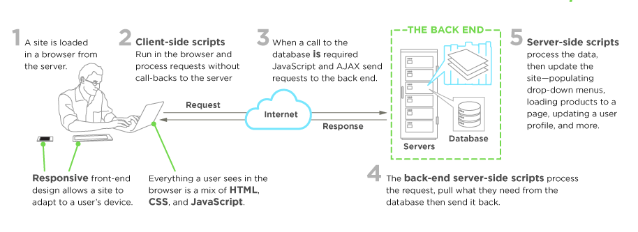 Image source: https://www.upwork.com/hiring/development/front-end-developer/
A person enters into the field of front-end development by learning to build a website/web application which relies on HTML, CSS, and JavaScript and commonly runs in a web browser but can also run in a headless browser, WebView, or as compilation input for a native runtime environment. These four run times scenarios are explained below.
Web Browsers (most common)
A web browser is software used to retrieve, present, and traverse information on the WWW. Typically, browsers run on a desktop or laptop computer, tablet, or phone, but as of late a browser can be found on just about anything (i.e, on a fridge, in cars, etc.).
The most common web browsers are (shown in order of most used first):
Headless Browsers
Headless browsers are a web browser without a graphical user interface that can be controlled from a command line interface programmatically for the purpose of web page automation (e.g., functional testing, scraping, unit testing, etc.). Think of headless browsers as a browser that you can run from the command line that can retrieve and traverse web pages.
The most common headless browsers are:
Webviews
Webviews are used by a native OS, in a native application, to run web pages. Think of a webview like an iframe or a single tab from a web browser that is embedded in a native application running on a device (e.g., iOS, android, windows).
The most common solutions for webview development are:
- Cordova (typically for native phone/tablet apps)
- NW.js (typically used for desktop apps)
- Electron (typically used for desktop apps)
Native from Web Tech
Eventually, what is learned from web browser development can be used by front-end developers to craft code for environments that are not fueled by a browser engine. As of late, development environments are being dreamed up that use web technologies (e.g., CSS and JavaScript), without web engines, to create native applications.
Some examples of these environments are:
Notes:
- Make sure you are clear what exactly is meant by the "web platform". Read, "The Web platform: what it is" and read the, "Open Web Platform" Wikipedia page. Explore the many technologies that make up the web platform.
Chapter 2. The Practice of Front-end Development: Overview
This chapter will break down and broadly describes the practice of front-end engineering.
2. - How Front-End Developers Are Made
How exactly does one become a front-end developer? Well, it's complicated. Just consider this road map:
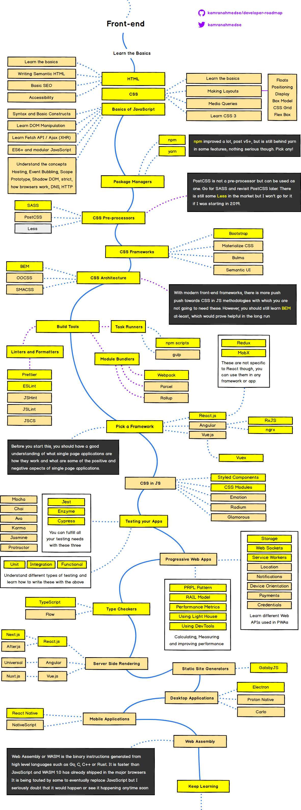
Image source: https://github.com/kamranahmedse/developer-roadmap
Today, in general, one can't go to college and expect to graduate with a degree in front-end engineering. And, I rarely hear of or meet front-end developers who suffered through what is likely a deprecated computer science degree or graphic design degree to end up writing HTML, CSS, and JavaScript professionally. From my perspective, most of the people working on the front-end today generally seem to be self taught from the ground up or cross over into the front-end from design or traditional computer science fields.
If you were to set out today to become a front-end developer I would loosely strive to follow the process outlined below (Chapter 3 and Chapter 4 will dive into more details on learning resources).
- Learn, roughly, how the web platform works. Make sure you know the "what" and "where" of HTML, CSS, DOM, JavaScript, Domains, DNS, URLs, HTTP, browsers, and servers/hosting. Don't dive deep on anything, just understand the parts and loosely how they fit together. Focus on the high level outlines for front-end architectures. Start with simple web pages.
- Learn HTML
- Learn CSS
- Learn JavaScript
- Learn DOM
- Learn the fundamentals of user interface design (i.e. UI patterns, interaction design, user experience design, and usability).
- Learn CLI/command line
- Learn the practice of software engineering (i.e., Application design/architecture, templates, Git, testing, monitoring, automating, code quality, development methodologies).
- Get opinionated and customize your tool box with whatever makes sense to your brain (e.g. Webpack, React, and Mobx).
- Learn Node.js
A short word of advice on learning. Learn the actual underlying technologies, before learning abstractions. Don't learn jQuery, learn the DOM. Don't learn SASS, learn CSS. Don't learn HAML, learn HTML. Don't learn TypeScript, learn JavaScript. Don't learn Handlebars, learn JavaScript ES6 templates. Don't just use Bootstrap, learn UI patterns.
Lately a lot of non-accredited, expensive, front-end code schools/bootcamps have emerged. These avenues of becoming a front-end developer are typically teacher directed courses, that follow a more traditional style of learning, from an official instructor (i.e., syllabus, test, quizzes, projects, team projects, grades, etc.). Keep in mind, if you are considering an expensive training program, this is the web! Everything you need to learn is on the web for the taking, costing little to nothing. However, if you need someone to tell you how to take and learn what is actually free, and hold you accountable for learning it, you might consider an organized course. Otherwise, I am not aware of any other profession that is practically free for the taking with an internet connection, a couple dollars a month for screencasting memberships, and a burning desire for knowledge.
For example if you want to get going today, consuming one or more of the following self-directed resources below can work:
- Getting started with the Web [read]
- So, You Want to be a Front-End Engineer [watch]
- Front-End Curriculum [read]
- Introduction to Web Development [watch][$]
- Treehouse Techdegree [watch][$]
- Front-End Dev Mastery [watch][$]
- Front-End Web Developer Nanodegree [watch][$]
- Full Stack for Front End Engineers [$]
- Become a Front-End Web Developer [watch][$]
- freeCodeCamp [interactive][watch]
If you are not a self motivated individual and need a more structured approach you should consider a directed learning path in a classroom setting.
When getting your start, you should fear most things that conceal complexity. Abstractions in the wrong hands can give the appearance of advanced skills, while all the time hiding the fact that a developer has an inferior understanding of the basics or underlying concepts.
It is assumed that on this journey you are not only learning, but also doing as you learn and investigate tools. Some suggest only doing to learn. While others suggest only learning about doing. I suggest you find a mix of both that matches how your brain works and do that. But, for sure, it is a mix! So, don't just read about it, do it. Learn, do. Learn, do. Repeat indefinitely because things change fast. This is why learning the fundamentals, and not abstractions, are so important.
2. - Front-End Jobs Titles
A great divide has been brewing in the front-end developer space for several years between two very different types of so called front-end developers. On the one side you have JavaScript focused programmers who write JavaScript for front-end runtimes that likely have computer science skills with a software development history. They more than likely view HTML and CSS as an abstraction (i.e. JSX and CSS in JS). On the other side you have, most likely, non-computer science educated developers who focus on HTML, CSS, and JavaScript as it specifically pertains to the UI. In 2019, when entering or trying to the understand the front-end developer space you will absolutely feel this divide. The term front-end developer is on the verge of meaninglessness without clarifying words to address what type of front-end developer is being discussed.
Below is a list and description of various front-end job titles. The common, or most used (i.e., generic), title for a front-end developer is, "front-end developer" or "front-end engineer". Note that any job that contains the word "front-end", "client-side", "web UI", "HTML", "CSS", or "JavaScript" typically infers that a person has some degree of HTML, CSS, DOM, and JavaScript professional know how.
Front-End Developer: The generic job title that describes a developer who is skilled to some degree at HTML, CSS, DOM, and JavaScript and implementing these technologies on the web platform.
Front-End Engineer (aka JavaScript Developer or Full-stack JavaScript Developer): The job title given to a developer who comes from a computer science, engineering, background and is using these skills to work with front-end technologies. This role typically requires computer science knowledge and years of software development experience. When the word "JavaScript Application" is included in the job title, this will denote that the developer should be an advanced JavaScript developer possessing advanced programming, software development, and application development skills (i.e has years of experience building front-end software applications).
CSS/HTML Developer: The front-end job title that describes a developer who is skilled at HTML and CSS, excluding JavaScript and Application know how.
Front-End Web Designer: When the word "Designer" is included in the job title, this will denote that the designer will posses front-end skills (i.e., HTML & CSS) but also professional design (Visual Design and Interaction Design) skills.
UI (User Interface) Developer/Engineer: When the word "Interface" or "UI" is included in the job title, this will denote that the developer should posses interaction design skills in addition to front-end developer skills or front-end engineering skills.
Mobile/Tablet Front-End Developer: When the word "Mobile" or "Tablet" is included in the job title, this will denote that the developer has experience developing front-ends that run on mobile or tablet devices (either natively or on the web platform, i.e., in a browser).
Front-End SEO Expert: When the word "SEO" is included in the job title, this will denote that the developer has extensive experience crafting front-end technologies towards an SEO strategy.
Front-End Accessibility Expert: When the word "Accessibility" is included in the job title, this will denote that the developer has extensive experience crafting front-end technologies that support accessibility requirements and standards.
Front-End Dev. Ops: When the word "DevOps" is included in the job title, this will denote that the developer has extensive experience with software development practices pertaining to collaboration, integration, deployment, automation, and quality.
Front-End Testing/QA: When the word "Testing" or "QA" is included in the job title, this will denote that the developer has extensive experience testing and managing software that involves unit testing, functional testing, user testing, and A/B testing.
Notes:
- If you come across the "Full Stack" or the generic "Web Developer" terms in job titles these words may be used by an employer to describe a role that is responsible for all aspects of web/app development, i.e., both front-end (potentially including design) and back-end.
2. - Baseline Web Technologies Employed by Front-End Developers
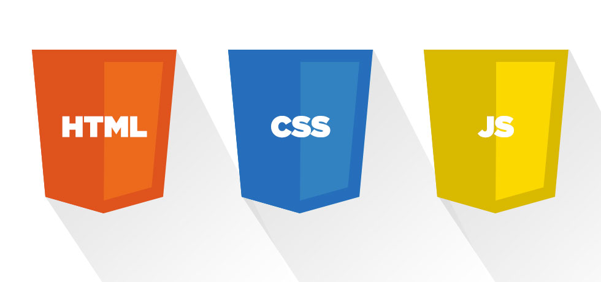
Image source: http://www.2n2media.com/compare-front-end-development-and-back-end-development
The following core web technologies are employed by front-end developers (consider learning them in this order):
- Hyper Text Markup Language (aka HTML)
- Cascading Style Sheets (aka CSS)
- Uniform Resource Locators (aka URLs)
- Hypertext Transfer Protocol (aka HTTP)
- JavaScript Programming Language (aka ECMAScript 262)
- JavaScript Object Notation (aka JSON)
- Document Object Model (aka DOM)
- Web APIs (aka HTML5 and friends or Browser APIs)
- Web Content Accessibility Guidelines (aka WCAG) & Accessible Rich Internet Applications (aka ARIA)
For a comprehensive list of all web related specifications have a look at platform.html5.org or MDN Web APIs.
The nine technologies just mentioned are defined below along with a link to the relevant documentation and specification for each technology.
Hyper Text Markup Language (aka HTML)
HyperText Markup Language, commonly referred to as HTML, is the standard markup language used to create web pages. Web browsers can read HTML files and render them into visible or audible web pages. HTML describes the structure of a website semantically along with cues for presentation, making it a markup language, rather than a programming language.
Most relevant specifications / documentation:
- All W3C HTML Spec
- The elements of HTML from the Living Standard
- Global attributes
- HTML 5.2 from W3C
- HTML 5.3 from W3C
- HTML attribute reference
- HTML element reference
- The HTML Syntax from the Living Standard
Cascading Style Sheets (aka CSS)
Cascading Style Sheets (CSS) is a style sheet language used for describing the look and formatting of a document written in a markup language. Although most often used to change the style of web pages and user interfaces written in HTML and XHTML, the language can be applied to any kind of XML document, including plain XML, SVG and XUL. Along with HTML and JavaScript, CSS is a cornerstone technology used by most websites to create visually engaging webpages, user interfaces for web applications, and user interfaces for many mobile applications.
Most relevant specifications / documentation:
- All W3C CSS Specifications
- Cascading Style Sheets Level 2 Revision 2 (CSS 2.2) Specification
- CSS reference
- Selectors Level 3
Hypertext Transfer Protocol (aka HTTP)
The Hypertext Transfer Protocol (HTTP) is an application protocol for distributed, collaborative, hypermedia information systems. HTTP is the foundation of data communication for the World Wide Web.
Most relevant specifications:
Uniform Resource Locators (aka URL)
A uniform resource locator (URL) (also called a web address) is a reference to a resource that specifies the location of the resource on a computer network and a mechanism for retrieving it. A URL is a specific type of uniform resource identifier (URI), although many people use the two terms interchangeably. A URL implies the means to access an indicated resource, which is not true of every URI. URLs occur most commonly to reference web pages (http), but are also used for file transfer (ftp), email (mailto), database access (JDBC), and many other applications.
Most relevant specifications:
Document Object Model (aka DOM)
The Document Object Model (DOM) is a cross-platform and language-independent convention for representing and interacting with objects in HTML, XHTML, and XML documents. The nodes of every document are organized in a tree structure, called the DOM tree. Objects in the DOM tree may be addressed and manipulated by using methods on the objects. The public interface of a DOM is specified in its application programming interface (API).
Most relevant specifications / documentation:
JavaScript Programming Language (aka ECMAScript 262)
JavaScript is a high level, dynamic, untyped, and interpreted programming language. It has been standardized in the ECMAScript language specification. Alongside HTML and CSS, it is one of the three essential technologies of World Wide Web content production; the majority of websites employ it and it is supported by all modern web browsers without plug-ins. JavaScript is prototype-based with first-class functions, making it a multi-paradigm language, supporting object-oriented, imperative, and functional programming styles. It has an API for working with text, arrays, dates and regular expressions, but does not include any I/O, such as networking, storage or graphics facilities, relying for these upon the host environment in which it is embedded.
Most relevant specifications / documentation:
Web APIs (aka HTML5 and friends)
When writing code for the Web using JavaScript, there are a great many APIs available. Below is a list of all the interfaces (that is, types of objects) that you may be able to use while developing your Web app or site.
— Mozilla
Most relevant documentation:
JavaScript Object Notation (aka JSON)
c It is the primary data format used for asynchronous browser/server communication (AJAJ), largely replacing XML (used by AJAX). Although originally derived from the JavaScript scripting language, JSON is a language-independent data format. Code for parsing and generating JSON data is readily available in many programming languages. The JSON format was originally specified by Douglas Crockford. It is currently described by two competing standards, RFC 7159 and ECMA-404. The ECMA standard is minimal, describing only the allowed grammar syntax, whereas the RFC also provides some semantic and security considerations. The official Internet media type for JSON is application/json. The JSON filename extension is .json.
Most relevant specifications:
Web Content Accessibility Guidelines (aka WCAG) & Accessible Rich Internet Applications (aka ARIA)
Accessibility refers to the design of products, devices, services, or environments for people with disabilities. The concept of accessible design ensures both “direct access” (i.e., unassisted) and "indirect access" meaning compatibility with a person's assistive technology (for example, computer screen readers).
2. - Potential Front-end Developer Skills
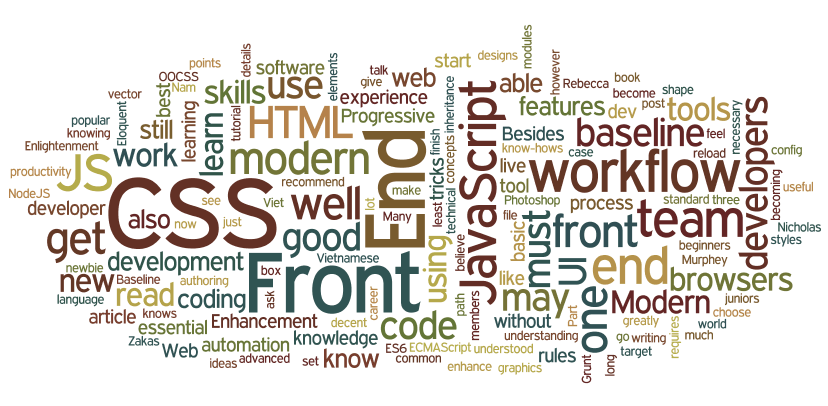
Image source: http://blog.naustud.io/2015/06/baseline-for-modern-front-end-developers.html
A basic to advanced understanding of HTML, CSS, DOM, JavaScript, HTTP/URL, and web browsers is assumed for any type of professional front-end developer role.
Beyond the skills just mentioned, a front-end developer might also be specifically skilled in one or more of the following:
- Content Management Systems (aka CMS)
- Node.js
- Cross-Browser Testing
- Cross-Platform Testing
- Unit Testing
- Cross-Device Testing
- Accessibility / WAI-ARIA
- Search Engine Optimization (aka SEO)
- Interaction or User Interface Design
- User Experience
- Usability
- E-commerce Systems
- Portal Systems
- Wireframing
- CSS Layout / Grids
- DOM Manipulation (e.g., jQuery)
- Mobile Web Performance
- Load Testing
- Performance Testing
- Progressive Enhancement / Graceful Degradation
- Version Control (e.g., GIT)
- MVC / MVVM / MV*
- Functional Programming
- Data Formats (e.g., JSON, XML)
- Data APIs (e.g Restful API)
- Web Font Embedding
- Scalable Vector Graphics (aka SVG)
- Regular Expressions
- Microdata / Microformats
- Task Runners, Build Tools, Process Automation Tools
- Responsive Web Design
- Object-Oriented Programming
- Application Architecture
- Modules
- Dependency Managers
- Package Managers
- JavaScript Animation
- CSS Animation
- Charts / Graphs
- UI Widgets
- Code Quality Testing
- Code Coverage Testing
- Code Complexity Analysis
- Integration Testing
- Command Line / CLI
- Templating Strategies
- Templating Engines
- Single Page Applications
- Web/Browser Security
- Browser Developer Tools
2. - Front-End Developers Develop For...
A front-end developer crafts HTML, CSS, and JS that typically runs on the web platform (e.g. a web browser) delivered from one of the following operating systems (aka OSs):
These operating systems typically run on one or more of the following devices:
- Desktop computer
- Laptop / netbook computer
- Mobile phone
- Tablet
- TV
- Watch
- Things (i.e., anything you can imagine, car, refrigerator, lights, thermostat, etc.)
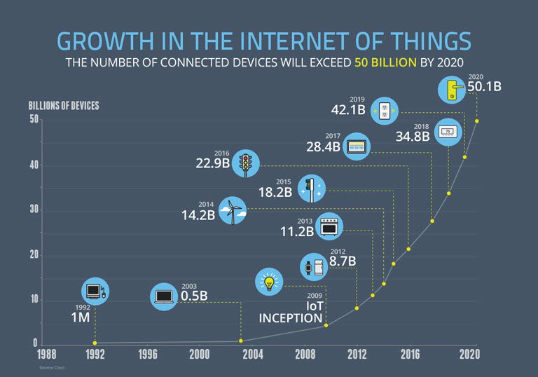
Image source: https://www.enterpriseirregulars.com/104084/roundup-internet-things-forecasts-market-estimates-2015/
Generally speaking, front-end technologies can run on the aforementioned operating systems and devices using the following run time web platform scenarios:
- A web browser (examples: Chrome, IE, Safari, Firefox).
- A headless browser (examples: Headless Chromium).
- A WebView/browser tab (think iframe) embedded within a native application as a runtime with bridge to native APIs. WebView applications typically contain a UI constructed from web technologies. (i.e., HTML, CSS, and JS). (examples: Apache Cordova, NW.js, Electron)
- A native application built from web tech that is interpreted at runtime with a bridge to native APIs. The UI will make use of native UI parts (e.g., iOS native controls) not web technologies. (examples: NativeScript, React Native)
2. - Front-End on a Team
A front-end developer is typically only one player on a team that designs and develops web sites, web applications, or native applications running from web technologies.
A bare bones development team for building professional web sites or software for the web platform will typically, minimally, contain the following roles.
- Visual Designer (i.e., fonts, colors, spacing, emotion, visuals concepts & themes)
- UI/Interaction Designer/Information Architect (i.e., wireframes, specifying all user interactions and UI functionality, structuring information)
- Front-End Developer (i.e., writes code that runs in client/on device)
- Back-End Developer (i.e., writes code that runs on server)
The roles are ordered according to overlapping skills. A front-end developer will typically have a good handle on UI/Interaction design as well as back-end development. It is not uncommon for team members to fill more than one role by taking on the responsibilities of an over-lapping role.
It is assumed that the team mentioned above is being directed by a project lead or some kind of product owner (i.e., stakeholder, project manager, project lead, etc.)
A larger web team might include the following roles not shown above:
- SEO Strategists
- DevOps Engineers
- Performance Engineers
- API Developers
- Database Administrators
- QA Engineers / Testers
NOTES:
A small trend seems to be occurring where a, "full-stack developer" takes on the responsibilities on both the front-end and back-end.
2. - Generalist/Full-Stack Myth
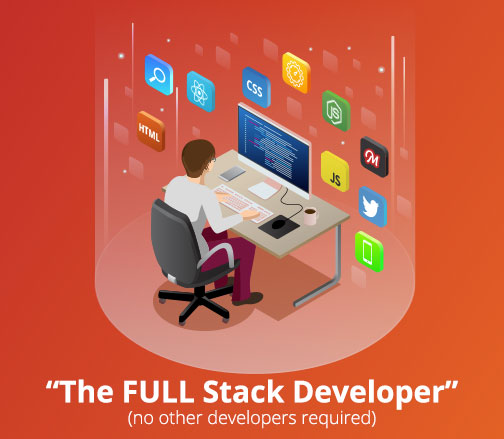
Image source: http://andyshora.com/full-stack-developers.html
The term "Full-Stack" developer has come to take on several meanings. So many, that not one meaning is clear when the term is used. Just consider the results from the two surveys shown below. These results might lead one to believe that being a full-stack developer is commonplace. But, in my almost 20 years of experience, this is anything but the case in a professional context.
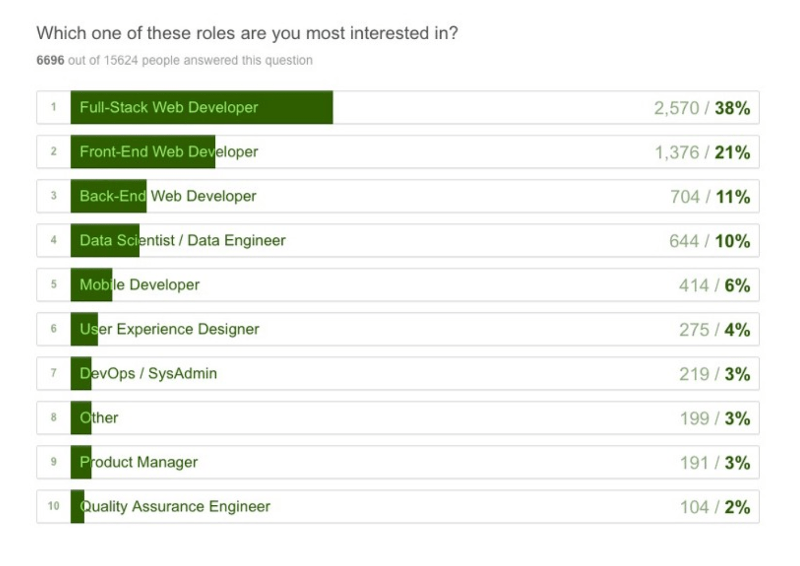
Image source: https://medium.freecodecamp.com/we-asked-15-000-people-who-they-are-and-how-theyre-learning-to-code-4104e29b2781#.ngcpn8nlz
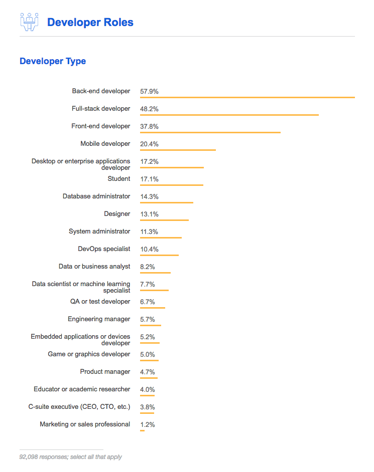
Image source: https://insights.stackoverflow.com/survey/2017#developer-profile-specific-developer-types
The roles to design and develop a website or web application require a deep set of skills and vast experience in the area of visual design, UI/interaction design, front-end development, and back-end development. Any person who can fill one or more of these 4 roles at a professional level is an extremely rare commodity.
Pragmatically, you should seek to be, or seek to hire, an expert in one of these roles (i.e. Visual Design, Interaction Design/IA, Front-end Dev, Back-end Dev). Those who claim to operate at an expert level at one or more of these roles are exceptionally rare.
However, given that JavaScript has infiltrated all layers of a technology stack (i.e. Node.js) finding a full-stack JS developer who can code the front-end and back-end is becoming less mythical. Typically, these full stack developers only deal with JavaScript. A developer who can code the front-end, back-end, API, and database isn't as absurd as it once was (excluding visual design, interaction design, and CSS). Still mythical in my opinion, but not as uncommon as it once was. Thus, I wouldn't recommend a developer set out to become a "full stack" developer. In rare situations it can work. But, as a general concept for building a career as a front-end developer, I'd focus on front-end technologies.
2. - Front-End Interviews
Preparing:
- Preparing for a Front-End Web Development Interview in 2017
- Cracking the front-end interview
- Front End Interview Handbook
Quiz's:
Questions you may get asked:
- 10 Interview Questions Every JavaScript Developer Should Know
- Front-End Job Interview Questions
- Front End Web Development Quiz
- Interview Questions for Front-End-Developer
- The Best Frontend JavaScript Interview Questions (written by a Frontend Engineer))
Questions you ask:
2. - Front-End Job Boards
A plethora of technical job listing outlets exist. The narrowed list below are currently the most relevant resources for finding a specific front-end position/career.
- authenticjobs.com
- careers.stackoverflow.com
- css-tricks.com/jobs
- frontenddeveloperjob.com
- glassdoor.com
- jobs.github.com
- linkedin.com
- remote.co
- weworkremotely.com
Notes:
- Want to work remotely as a front-end developer checkout these remote-friendly companies.
2. - Front-End Salaries
The national average in the U.S for a mid-level front-end developer is somewhere between $65k and 100k.
Of course when you first start expect to enter the field at around 40k depending upon location and experience.
Notes:
- A lead/senior front-end developer/engineer can potentially live wherever they want (i.e., work remotely) and make over $150k a year (visit angel.co, sign-up, review front-end jobs over $150k or examine the salary ranges on Stack Overflow Jobs).
Chapter 3. Learning To Be A Front-end Developer: Self Directed
This chapter highlights the many resources (video training, books, etc.) that an individual can use to direct their own learning process and career as a front-end developer.
The learning resources identified (articles, books, videos, screencasts etc..) will include both free and paid material. Paid material will be indicated with [$].
3.1. - Learn Internet/Web
The Internet is a global system of interconnected computer networks that use the Internet protocol suite (TCP/IP) to link several billion devices worldwide. It is a network of networks that consists of millions of private, public, academic, business, and government networks of local to global scope, linked by a broad array of electronic, wireless, and optical networking technologies. The Internet carries an extensive range of information resources and services, such as the inter-linked hypertext documents and applications of the World Wide Web (WWW), electronic mail, telephony, and peer-to-peer networks for file sharing.
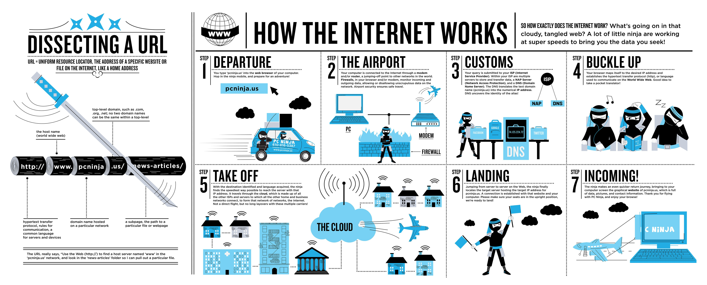
Image source: https://www.helloitsliam.com/2014/12/20/how-the-internet-works-infographic/
- What is the Internet? [watch]
- How the Web works [read]
- How does the Internet work? https://developer.mozilla.org/en-US/docs/Learn/Common_questions/How_does_the_Internet_work and http://web.stanford.edu/class/msande91si/www-spr04/readings/week1/InternetWhitepaper.htm [read]
- How the Internet Works [watch]
- How the Internet Works in 5 Minutes [watch]
- How the Web Works [watch]
- What Is the Internet? Or, "You Say Tomato, I Say TCP/IP" [read]
- Don’t Fear the Internet
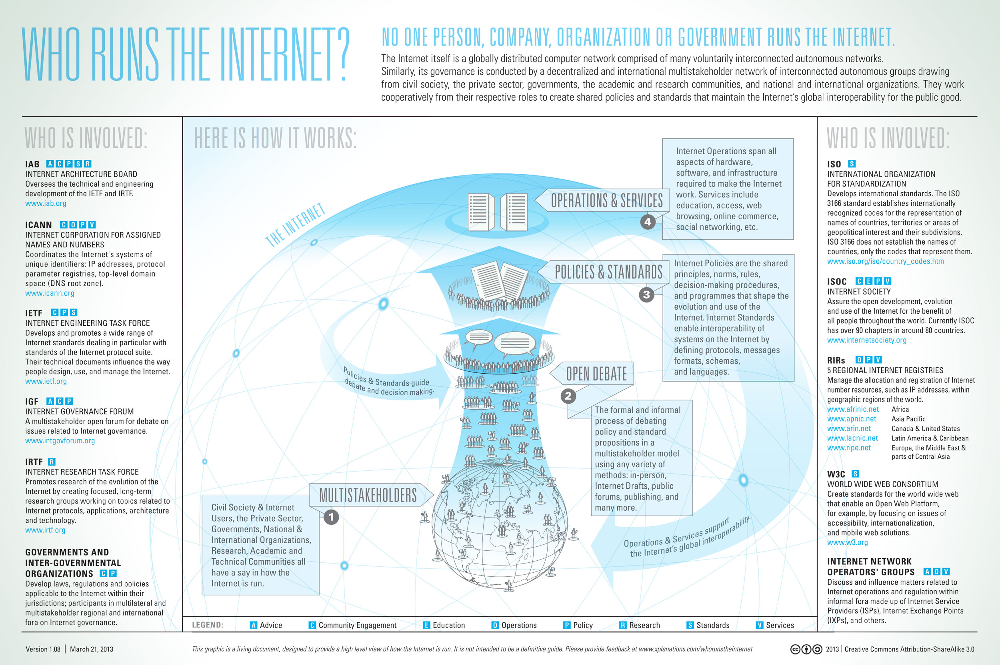
Image source: http://www.bitrebels.com/technology/find-out-who-runs-the-internet-chart/
3.2. - Learn Web Browsers
A web browser (commonly referred to as a browser) is a software application for retrieving, presenting, and traversing information resources on the World Wide Web. An information resource is identified by a Uniform Resource Identifier (URI/URL) and may be a web page, image, video or other piece of content. Hyperlinks present in resources enable users easily to navigate their browsers to related resources. Although browsers are primarily intended to use the World Wide Web, they can also be used to access information provided by web servers in private networks or files in file systems.
The most commonly used browsers (on desktop and mobile) are:
- Chrome (engine: Blink + V8)
- Firefox (engine: Gecko + SpiderMonkey)
- Internet Explorer (engine: Trident + Chakra)
- Safari (engine: Webkit + SquirrelFish)

Image source: http://gs.statcounter.com/browser-market-share
Evolution of Browsers & Web Technologies (i.e., APIs)
- evolutionoftheweb.com [read]
- Timeline of web browsers [read]
The Most Commonly Used Headless Browser Are:
- Headless Chromium (engine: Blink + V8)
- PhantomJS (engine: Webkit + SquirrelFish)
- SlimerJS (engine: Gecko + SpiderMonkey)
- TrifleJS (engine: Trident + Chakra)
How Browsers Work
- 20 Things I Learned About Browsers and the Web [read]
- Fast CSS: How Browsers Lay Out Web Pages [read]
- How Browsers Work: Behind the scenes of modern web browsers [read]
- Quantum Up Close: What is a browser engine?
- So How Does the Browser Actually Render a Website [watch]
- What forces layout / reflow [read]
- What Every Frontend Developer Should Know About Webpage Rendering [read]
Optimizing for Browsers:
- Browser Rendering Optimization [watch]
- Website Performance Optimization [watch]
Comparing Browsers
- Comparison of Web Browsers [read]
Browser Hacks
- browserhacks.com [read]
Developing for Browsers
In the past, front-end developers spent a lot of time making code work in several different browsers. This was once a bigger issue than it is today. Today, abstractions (e.g., React, Webpack, Post-CSS, Babel etc...) combined with modern browsers make browser development fairly easy. The new challenge is not which browser the user will use, but on which device they will run the browser.
Evergreen Browsers
The latest versions of most modern browsers are considered evergreen browsers. That is, in theory they are suppose to automatically update themselves silently without prompting the user. This move towards self updating browsers has been in reaction to the slow process of eliminating older browsers that do not auto-update.
Picking a Browser
As of today, most front-end developers use Chrome and "Chrome Dev Tools" to develop front-end code. However, the most used modern browsers all offer a flavor of developer tools. Picking one to use for development is a subjective choice. The more important issue is knowing which browsers, on which devices, you have to support and then testing appropriately.
3.3 - Learn Domain Name System (aka DNS)
The Domain Name System (DNS) is a hierarchical distributed naming system for computers, services, or any resource connected to the Internet or a private network. It associates various information with domain names assigned to each of the participating entities. Most prominently, it translates domain names, which can be easily memorized by humans, to the numerical IP addresses needed for the purpose of computer services and devices worldwide. The Domain Name System is an essential component of the functionality of most Internet services because it is the Internet's primary directory service.
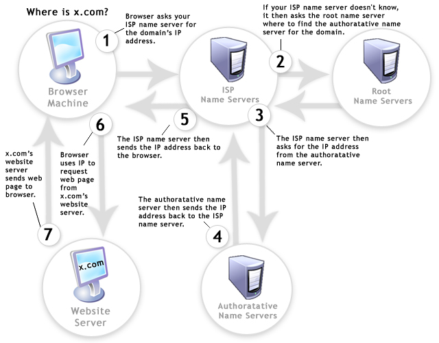
Image source: http://www.digital-digest.com/blog/DVDGuy/wp-content/uploads/2011/11/how_dns_works.jpg
- An Introduction to DNS Terminology, Components, and Concepts [read]
- DNS Explained [watch]
- How DNS Works [read]
- The Internet: IP Addresses and DNS [watch]
- What is a domain name? [read]
3.4 - Learn HTTP/Networks (Including CORS & WebSockets)
HTTP - The Hypertext Transfer Protocol (HTTP) is an application protocol for distributed, collaborative, hypermedia information systems. HTTP is the foundation of data communication for the World Wide Web.
HTTP Specifications
HTTP Docs
- MDN HTTP [read]
HTTP Videos/Articles/Tutorials
- High Performance Browser Networking: What Every Web Developer Should Know About Networking and Web Performance [read]
- MDN: An overview of HTTP [read]
- HTTP: The Definitive Guide (Definitive Guides) [read][$]
- HTTP/2 Frequently Asked Questions [read]
- HTTP Fundamentals [watch][$]
- HTTP/2 Fundamentals [watch][$]
- HTTP: The Protocol Every Web Developer Must Know - Part 1 [read]
- HTTP: The Protocol Every Web Developer Must Know - Part 2 [read]
- HTTP Succinctly [read]
HTTP Status Codes
CORS - Cross-origin resource sharing (CORS) is a mechanism that allows restricted resources (e.g., fonts) on a web page to be requested from another domain outside the domain from which the resource originated.
CORS Specifications
CORS
- CORS in Action [read][$]
- HTTP Access Control (CORS) [read]
WebSockets - WebSocket is a protocol providing full-duplex communication channels over a single TCP connection. The WebSocket protocol was standardized by the IETF as RFC 6455 in 2011, and the WebSocket API in Web IDL is being standardized by the W3C.
WebSockets
- Connect the Web With WebSockets [watch]
- WebSocket: Lightweight Client-Server Communications [read][$]
- The WebSocket Protocol [read]
3.5 - Learn Web Hosting
A web hosting service is a type of Internet hosting service that allows individuals and organizations to make their website accessible via the World Wide Web. Web hosts are companies that provide space on a server owned or leased for use by clients, as well as providing Internet connectivity, typically in a data center.
General Learning:
Image source: https://firstsiteguide.com/wp-content/uploads/2016/06/what-is-web-hosting-infographic.jpg
3.6 - Learn General Front-End Development
- Become a Front-End Web Developer [watch][$]
- Being a web developer [read]
- Foundations of Front-End Web Development [watch]
- freeCodeCamp [interact]
- Front-End Curriculum [read]
- Front-End Dev Mastery [watch][$]
- Front-End Web Developer Nanodegree [watch][$]
- Front End Web Development Career Kickstart [watch][$]
- Front End Web Development: Get Started [watch][$]
- Front-End Web Development Quick Start With HTML5, CSS, and JavaScript [watch][$]
- Front-End Web Development: The Big Nerd Ranch Guide [read][$]
- Frontend Guidelines [read]
- Introduction to Web Development [watch][$]
- Isobar Front-End Code Standards [read]
- Lean Front-End Engineering [watch][$]
- Learn Front End Web Development [watch][$]
- Planning a Front-End JS Application [watch]
- So, You Want to Be a Front-End Engineer [watch]
3.7 - Learn User Interface/Interaction Design
User Interface Design - User interface design (UI) or user interface engineering is the design of user interfaces for machines and software, such as computers, home appliances, mobile devices, and other electronic devices, with the focus on maximizing the user experience. The goal of user interface design is to make the user's interaction as simple and efficient as possible, in terms of accomplishing user goals (user-centered design).
Interaction Design Pattern - A design pattern is a formal way of documenting a solution to a common design problem. The idea was introduced by the architect Christopher Alexander for use in urban planning and building architecture, and has been adapted for various other disciplines, including teaching and pedagogy, development organization and process, and software architecture and design.
User Experience Design - User Experience Design (UXD or UED or XD) is the process of enhancing user satisfaction by improving the usability, accessibility, and pleasure provided in the interaction between the user and the product. User experience design encompasses traditional human–computer interaction (HCI) design, and extends it by addressing all aspects of a product or service as perceived by users.
Human–Computer Interaction - Human–computer interaction (HCI) researches the design and use of computer technology, focusing particularly on the interfaces between people (users) and computers. Researchers in the field of HCI both observe the ways in which humans interact with computers and design technologies that lets humans interact with computers in novel ways.
Minimally I'd suggest reading the following canonical texts on the matter so one can support and potential build usable user interfaces.
- About Face: The Essentials of Interaction Design [read][$]
- Design for Hackers: Reverse Engineering Beauty [read][$]
- Design for Non-Designers [watch]
- Designing Interfaces [read][$]
- Designing Web Interfaces: Principles and Patterns for Rich Interactions [read][$]
- Don't Make Me Think, Revisited: A Common Sense Approach to Web Usability [read][$]
3.8 - Learn HTML & CSS
HTML - HyperText Markup Language, commonly referred to as HTML, is the standard markup language used to create web pages. Web browsers can read HTML files and render them into visible or audible web pages. HTML describes the structure of a website semantically along with cues for presentation, making it a markup language, rather than a programming language.
CSS - Cascading Style Sheets (CSS) is a style sheet language used for describing the look and formatting of a document written in a markup language. Although most often used to change the style of web pages and user interfaces written in HTML and XHTML, the language can be applied to any kind of XML document, including plain XML, SVG and XUL. Along with HTML and JavaScript, CSS is a cornerstone technology used by most websites to create visually engaging webpages, user interfaces for web applications, and user interfaces for many mobile applications.
Liken to constructing a house, one might consider HTML the framing and CSS to be the painting & decorating.
General Learning:
- Absolute Centering in CSS [read]
- codecademy.com HTML & CSS [interact]
- CSS Positioning [watch][$]
- Front End Web Development: Get Started [watch][$]
- Front-End Web Development Quick Start With HTML5, CSS, and JavaScript [watch][$]
- HTML and CSS: Design and Build Websites [read][$]
- HTML Document Flow [watch][$]
- HTML Mastery: Semantics, Standards, and Styling [read][$]
- Interneting is Hard [read]
- Intro to HTML/CSS: Making webpages [watch]
- Learn to Code HTML & CSS [read]
- Learn CSS Layout [read]
- MarkSheet [read]
- MDN: HTML [read]
- MDN: CSS [read]
- Semantic HTML: How to Structure Web Pages [watch]
- Solid HTML Form Structure [watch]
- Understanding the CSS Box Model [watch]
- Resilient Web Design [read]
Mastering CSS:
- A Complete Guide to Flexbox [read]
- CSS Diner [interact]
- CSS Selectors from CSS4 till CSS1 [read]
- CSS Secrets: Better Solutions to Everyday Web Design Problems [read][$]
- CSS3 [read]
- CSS In-Depth, v2 [watch][$]
- What the Flexbox?! A Simple, Free 20 Video Course That Will Help You Master CSS Flexbox [watch]
- 30 Seconds of CSS - A curated collection of useful CSS snippets you can understand in 30 seconds or less. [read]
References/Docs:
- CSS Triggers...a Game of Layout, Paint, and Composite
- cssreference.io
- cssvalues.com
- Default CSS for Chrome Browser
- Head - A list of everything that could go in the of your document
- HTML Attribute Reference
- MDN CSS Reference
- MDN HTML Element Reference
Glossary/Vocabulary:
- CSS Glossary - Programming Reference for CSS Covering Comments, Properties, and Selectors
- CSS Vocabulary
- HTML Glossary Programming Reference for HTML elements
Standards/Specifications:
- All W3C CSS Specifications
- All W3C HTML Spec
- Cascading Style Sheets Level 2 Revision 2 (CSS 2.2) Specification
- CSS Indexes - A listing of every term defined by CSS specs
- The Elements of HTML from the Living Standard
- Global Attributes
- The HTML Syntax from the Living Standard
- HTML 5.2 from W3C
- Selectors Level 3
Architecting CSS:
Authoring/Architecting Conventions:
- CSS code guide [read]
- css-architecture
- cssguidelin.es [read]
- Idiomatic CSS [read]
- MaintainableCSS [read]
- Standards for Developing Flexible, Durable, and Sustainable HTML and CSS [read]
HTML/CSS Newsletters:
3.9 - Learn Search Engine Optimization
Search engine optimization (SEO) is the process of affecting the visibility of a website or a web page in a search engine's unpaid results — often referred to as "natural," "organic," or "earned" results. In general, the earlier (or higher ranked on the search results page), and more frequently a site appears in the search results list, the more visitors it will receive from the search engine's users. SEO may target different kinds of search, including image search, local search, video search, academic search, news search and industry-specific vertical search engines.
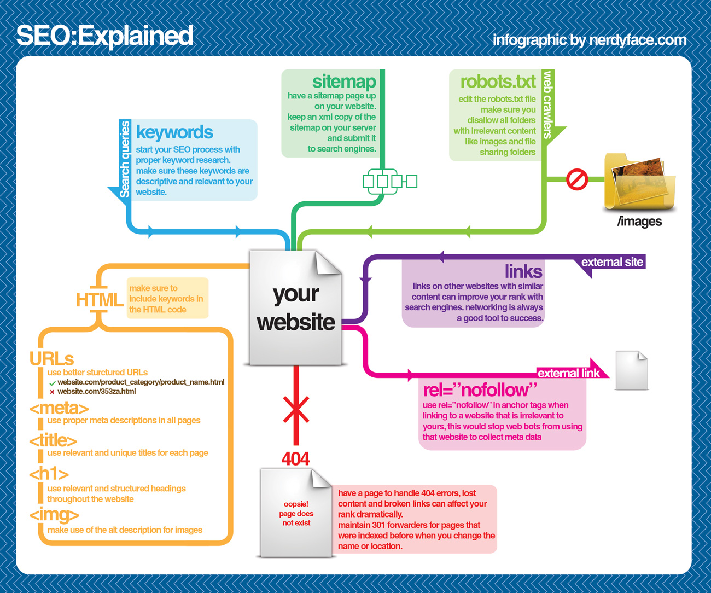
Image source: https://visual.ly/community/infographic/computers/how-does-seo-work
General Learning:
- Google Search Engine Optimization Starter Guide [read]
- Modern SEO [watch][$]
- SEO Fundamentals From David Booth [watch][$]
- SEO Fundamentals From Paul Wilson [watch][$]
- SEO Tutorial For Beginners in 2016 [read]
- SEO for Web Designers [watch][$]
3.10 - Learn JavaScript
JavaScript is a high level, dynamic, untyped, and interpreted programming language. It has been standardized in the ECMAScript language specification. Alongside HTML and CSS, it is one of the three essential technologies of World Wide Web content production; the majority of websites employ it and it is supported by all modern web browsers without plug-ins. JavaScript is prototype-based with first-class functions, making it a multi-paradigm language, supporting object-oriented, imperative, and functional programming styles. It has an API for working with text, arrays, dates and regular expressions, but does not include any I/O, such as networking, storage or graphics facilities, relying for these upon the host environment in which it is embedded.
Getting Started:
- Ten Things A Serious JavaScript Developer Should Learn
- codecademy.com JavaScript [interact]
- MDN: JavaScript [read]
- javascript.info
- JavaScript Enlightenment [read]
- Eloquent JavaScript [read]
General Learning:
- Speaking JavaScript [read]
- You Don't Know JS: Up & Going [read]
- You Don't Know JS: Types & Grammar [read]
- You Don't Know JS: Scope & Closures [read]
- Gentle explanation of 'this' keyword in JavaScript [read]
- You Don't Know JS: this & Object Prototypes [read]
- Modern JavaScript Cheatsheet - Cheatsheet for the JavaScript knowledge you will frequently encounter in modern projects. [read]
- JavaScript: The Hard Parts [watch][$]
- Deep Foundations of JavaScript [watch][$]
Mastering:
- Setting up ES6 [read]
- ES6 FOR EVERYONE! [watch][$]
- Exploring ES6 [read]
- You Don't Know JS: ES6 & Beyond [read]
- Understanding ECMAScript 6: The Definitive Guide for JavaScript Developers [read][$]
- ES6: The Right Parts [watch][$]
- Exploring ES2016 and ES2017 [read]
- JavaScript Regular Expression Enlightenment [read]
- Using Regular Expressions [watch][$]
- You Don't Know JS: Async & Performance [read]
- JavaScript with Promises [read][$]
- Test-Driven JavaScript Development [read][$]
- JS MythBusters [read]
- Robust JavaScript
Functional JavaScript:
- Functional Programming Jargon
- funfunfunction: Functional programming in JavaScript [watch]
- Functional-Light-JS [read]
- Functional Programming in JavaScript: How to improve your JavaScript programs using functional techniques [read]
- Mostly adequate guide to FP (in javascript) [read]
- Professor Frisby Introduces Composable Functional JavaScript [watch]
- JavaScript Allongé [read][$]
- Functional-Lite JavaScript (v2) [watch][$]
- Hardcore Functional Programming in JavaScript [watch][$]
References/Docs:
Glossary/Encyclopedia/Jargon:
Standards/Specifications:
- How to Read the ECMAScript Specification
- ECMAScript® 2015 Language Specification
- ECMAScript® 2016 Language Specification
- ECMAScript® 2017 Language Specification
- ECMAScript® 2018 Language Specification
- Status, Process, and Documents for ECMA262
Style:
Deprecated JS Learning Resources:
- Crockford on JavaScript - Volume 1: The Early Years [watch]
- Crockford on JavaScript - Chapter 2: And Then There Was JavaScript [watch]
- Crockford on JavaScript - Act III: Function the Ultimate [watch]
- Crockford on JavaScript - Episode IV: The Metamorphosis of Ajax [watch]
- Crockford on JavaScript - Part 5: The End of All Things [watch]
- Crockford on JavaScript - Scene 6: Loopage [watch]
- JavaScript Patterns [read][$]
- The Principles of Object-Oriented JavaScript [read][$]
- JavaScript Modules [read]
- Functional JavaScript: Introducing Functional Programming with Underscore.js [read][$]
- The Good Parts of JavaScript and the Web [watch][$]
- High Performance JavaScript (Build Faster Web Application Interfaces) [read][$]
JS Explorers:
3.11 - Learn DOM, BOM, & jQuery
DOM - The Document Object Model (DOM) is a cross-platform and language-independent convention for representing and interacting with objects in HTML, XHTML, and XML documents. The nodes of every document are organized in a tree structure, called the DOM tree. Objects in the DOM tree may be addressed and manipulated by using methods on the objects. The public interface of a DOM is specified in its application programming interface (API).
BOM - The Browser Object Model (BOM) is a browser-specific convention referring to all the objects exposed by the web browser. Unlike the Document Object Model, there is no standard for implementation and no strict definition, so browser vendors are free to implement the BOM in any way they wish.
jQuery - jQuery is a cross-platform JavaScript library designed to simplify the client-side scripting of HTML. jQuery is the most popular JavaScript library in use today, with installation on 65% of the top 10 million highest-trafficked sites on the Web. jQuery is free, open-source software licensed under the MIT License.
The ideal path, but certainly the most difficult, would be to first learn JavaScript, then the DOM, then jQuery. However, do what makes sense to your brain. Most front-end developers learn about JavaScript and then DOM by way of first learning jQuery. Whatever path you take, just make sure JavaScript, the DOM, and jQuery don't become a black box.
General Learning:
- Codecademy.com jQuery [watch]
- The Document Object Model [read]
- HTML/JS: Making Webpages Interactive [watch]
- HTML/JS: Making Webpages Interactive with jQuery [watch]
- jQuery Enlightenment [read]
- What is the DOM? [read]
Mastering:
- AdvancED DOM Scripting: Dynamic Web Design Techniques [read][$]
- Advanced JS Fundamentals to jQuery & Pure DOM Scripting [watch][$]
- Douglas Crockford: An Inconvenient API - The Theory of the DOM [watch]
- DOM Enlightenment [read][$] or read online for free
- Fixing Common jQuery Bugs [watch][$]
- jQuery-Free JavaScript [watch][$]
- jQuery Tips and Tricks [watch][$]
References/Docs:
- jQuery Docs
- Events
- DOM Browser Support
- DOM Events Browser Support
- HTML Interfaces Browser Support
- MDN Document Object Model (DOM)
- MDN Browser Object Model
- MDN Document Object Model
- MDN Event reference
- MSDN Document Object Model (DOM)
Standards/Specifications:
- Document Object Model (DOM) Level 3 Events Specification
- Document Object Model (DOM) Technical Reports
- DOM Living Standard
- W3C DOM4
3.12 - Learn Web Animation
General Learning:
- Advanced SVG Animation [$][watch]
- Adventures in Web Animations [$][watch]
- Animating With Snap.svg [$][watch]
- Animation in CSS3 and HTML5 [$][watch]
- Create Animations in CSS [read & watch]
- CSS Animation in the Real World [$][watch]
- Foundation HTML5 Animation with JavaScript [$][read]
- Learn to Create Animations in JavaScript [read & watch]
- Motion Design with CSS [$][watch]
- State of the Animation 2015 [watch]
- Web Animation using JavaScript: Develop & Design (Develop and Design) [$][read]
Standards/Specifications:
3.13 - Learn Web Fonts, Icons, & Images
Web typography refers to the use of fonts on the World Wide Web. When HTML was first created, font faces and styles were controlled exclusively by the settings of each Web browser. There was no mechanism for individual Web pages to control font display until Netscape introduced the
<font>tag in 1995, which was then standardized in the HTML 3.2 specification. However, the font specified by the tag had to be installed on the user's computer or a fallback font, such as a browser's default sans-serif or monospace font, would be used. The first Cascading Style Sheets specification was published in 1996 and provided the same capabilities.The CSS2 specification was released in 1998 and attempted to improve the font selection process by adding font matching, synthesis and download. These techniques did not gain much use, and were removed in the CSS2.1 specification. However, Internet Explorer added support for the font downloading feature in version 4.0, released in 1997. Font downloading was later included in the CSS3 fonts module, and has since been implemented in Safari 3.1, Opera 10 and Mozilla Firefox 3.5. This has subsequently increased interest in Web typography, as well as the usage of font downloading.
Fonts:
- A Comprehensive Guide to Font Loading Strategies [read]
- Beautiful Web Type a Showcase of the Best Typefaces from the Google Web Fonts Directory [read]
- Quick Guide to Webfonts via @font-face [read]
- MDN: Web fonts [read]
- Responsive Typography [watch][$]
- Typography for the Web [watch][$]
Icons:
- [read] [watch]
Images:
- MDN: Images in HTMLb [read]
- MDN: Responsive images [read]
- SVG ON THE WEB - A Practical Guide [read]
3.14 - Learn Accessibility
Accessibility refers to the design of products, devices, services, or environments for people with disabilities. The concept of accessible design ensures both “direct access” (i.e., unassisted) and "indirect access" meaning compatibility with a person's assistive technology (for example, computer screen readers).
Accessibility can be viewed as the "ability to access" and benefit from some system or entity. The concept focuses on enabling access for people with disabilities, or special needs, or enabling access through the use of assistive technology; however, research and development in accessibility brings benefits to everyone.
Accessibility is not to be confused with usability, which is the extent to which a product (such as a device, service, or environment) can be used by specified users to achieve specified goals with effectiveness, efficiency and satisfaction in a specified context of use.
Accessibility is strongly related to universal design which is the process of creating products that are usable by people with the widest possible range of abilities, operating within the widest possible range of situations. This is about making things accessible to all people (whether they have a disability or not).
General Learning:
- 9 tips to get bare minimum of web accessibility
- Foundations of UX: Accessibility [watch][$]
- How HTML elements are supported by screen readers [read]
- Introduction to Web Accessibility - Google Open Online Education [watch]
- Introduction to Web Accessibility - WAI [read]
- Universal Design for Web Applications: Web Applications That Reach Everyone [read][$]
- Web Accessibility: Getting Started [watch][$]
- A Web for Everyone [read][$]
- Web Accessibility [watch][$]
- A11ycasts [watch]
- Accessibility by Google - Udacity course [watch]
Standards/Specifications:
- Accessible Rich Internet Applications (WAI-ARIA) Current Status
- Web Accessibility Initiative (WAI)
- Web Content Accessibility Guidelines (WCAG) Current Status
3.15 - Learn Web/Browser APIs
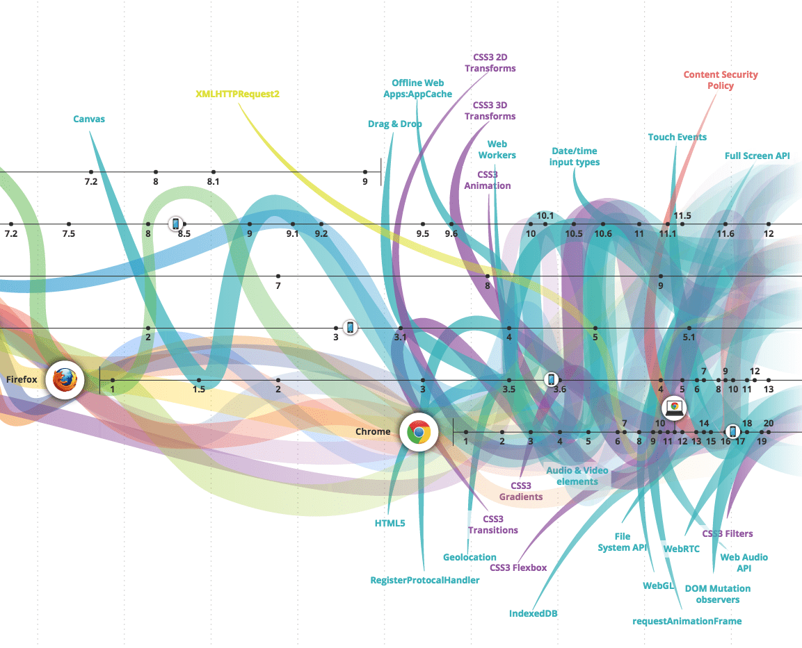
Image source: http://www.evolutionoftheweb.com/
The BOM (Browser Object Model) and the DOM (Document Object Model) are not the only browser APIs that are made available on the web platform inside of browsers. Everything that is not specifically the DOM or BOM, but an interface for programming the browser could be considered a web or browser API (tragically in the past some of these APIs have been called HTML5 APIs which confuses their own specifics/standardize with the actual HTML5 specification specifying the HTML5 markup language). Note that web or browser APIs do include device APIs (e.g., Navigator.getBattery()) that are available through the browser on tablet and phones devices.
You should be aware of and learn, where appropriate, web/browser APIs. A good tool to use to familiarize oneself with all of these APIs would be to investigate the HTML5test.com results for the 5 most current browsers.
MDN has a great deal of information about web/browser APIs.
- MDN Web API Reference
- MDN Web APIs Interface Reference - All Interfaces, Arranged Alphabetically
- MDN WebAPI - Lists Device Access APIs and Other APIs Useful for Applications
Keep in mind that not every API is specified by the W3C or WHATWG.
In addition to MDN, you might find the following resources helpful for learning about all the web/browser API's:
3.16 - Learn JSON (JavaScript Object Notation)
JSON, (canonically pronounced sometimes JavaScript Object Notation), is an open standard format that uses human-readable text to transmit data objects consisting of attribute–value pairs. It is the primary data format used for asynchronous browser/server communication (AJAJ), largely replacing XML (used by AJAX).
Although originally derived from the JavaScript scripting language, JSON is a language-independent data format. Code for parsing and generating JSON data is readily available in many programming languages.
The JSON format was originally specified by Douglas Crockford. It is currently described by two competing standards, RFC 7159 and ECMA-404. The ECMA standard is minimal, describing only the allowed grammar syntax, whereas the RFC also provides some semantic and security considerations. The official Internet media type for JSON is application/json. The JSON filename extension is .json.
General Learning:
- Introduction to JavaScript Object Notation: A To-the-Point Guide to JSON [read][$]
- json.com [read]
- What is JSON [watch]
References/Docs:
- json.org [read]
Standards/Specifications:
- ECMA-404 The JSON Data Interchange Format
- RFC 7159 The JavaScript Object Notation (JSON) Data Interchange Format
- STD 90 - RFC 8259 - The JavaScript Object Notation (JSON) Data Interchange Format, DECEMBER 2017
Architecting:
3.17 - Learn JS Templates
A JavaScript template is typically used, but not always with a MV* solution to separate parts of the view (i.e., the UI) from the logic and model (i.e., the data or JSON).
- ES6 Template Literals, the Handlebars killer? [read]
- Getting Started with nunjucks [read]
- Instant Handlebars.js [read][$]
- JavaScript Templating with Handlebars [watch][$]
- Learn Handlebars in 10 Minutes or Less [read]
- Lodash Templates [docs]
Note that JavaScript 2015 (aka ES6) added a native templating mechanism called "Templates strings". Additionally, templating as of late has been replaced by things like JSX, a template element, or HTML strings.
If I was not using React & JSX I'd first reach for JavaScript "Templates strings" and when that was lacking move to nunjucks.
3.18 - Learn Static Site Generators
Static site generators, typically written using server side code (i.e., ruby, php, python, nodeJS, etc.), produce static HTML files from static text/data + templates that are intended to be sent from a server to the client statically without a dynamic nature.
General Learning:
- JAMstack [read]
- Static Site Generators [read]
- Working with Static Sites - Bringing the Power of Simplicity to Modern Sites [read][$]
3.19 - Learn Computer Science via JS
- Four Semesters of Computer Science in Six Hours [video][$]
- Four Semesters of Computer Science in Six Hours: Part 2 [video][$]
- Computer Science in JavaScript [read]
- Collection of classic computer science paradigms, algorithms, and approaches written in JavaScript [read]
- Algorithms and Data Structures in JavaScript [watch][$]
3.20 - Learn Front-End Application Architecture
General Learning:
- JavaScript Application Design [read][$]
- Programming JavaScript Applications [read]
- Grab Front End Guide [read]
- A set of best practices for JavaScript projects
- Spellbook of Modern Web Dev
- JavaScript Stack from Scratch
Deprecated Learning Materials:
- Build an App with React and Ampersand [watch]
- Building Modern Single-Page Web Applications [watch][$]
- Eloquent JavaScript: Modules [read]
- Field Guide to Web Applications [read]
- Frontend Guidelines Questionnaire [read]
- Human JavaScript [read]
- Nicholas Zakas: Scalable JavaScript Application Architecture [watch]
- Organizing JavaScript Functionality [watch][$]
- Patterns for Large-Scale JavaScript Application Architecture [read]
- Terrific [read]
- UI Architecture [watch][$]
- Web UI Architecture [watch][$]
Not a lot of general content is being created on this topic as of late. Most of the content offered for learning how to build front-end/SPA/JavaScript applications presupposes you've decided up a tool like Angular, Ember, React, or Aurelia.
My advice, in 2019 learn React and Mobx.
3.21 - Learn Data (i.e. JSON) API Design
- REST & GraphQL API Design in Node.js, v2 (using Express & MongoDB) [watch][$]
- Build APIs You Won't Hate [$][read]
- JSON API [read]
- RESTful Web API Design with Node.JS - Second Edition [$][read]
3.22 - Learn React
Learning React:
- The Beginner's Guide to ReactJS [read]
- React.js Introduction For People Who Know Just Enough jQuery To Get By [read]
- 13 things you need to know about React [read]
- Tutorial: Intro To React [read]
- ReactJS For Stupid People [read]
- Complete Intro to React, v3 (feat. Redux, Router & Flow) [watch][$]
- React 🎄 [read]
- React Enlightenment [read]
- REACT JS TUTORIAL #1 - Reactjs Javascript Introduction & Workspace Setup [watch]
Mastering React:
- Build Your First Production Quality React App [watch][$]
- Advanced React Component Patterns [watch][$]
- React Patterns [read]
- 8 Key React Component Decisions [read]
- React + Mobx codebase containing real world examples (CRUD, auth, advanced patterns, etc) that adheres to the RealWorld spec and API. [code]
- An Introduction to React Router v4 and its Philosophy Toward Routing [read]
Once you have a good handle on React move on to learning a more robust state management solution like MobX. If you are an experienced developer with Functional Programming knowledge look at Redux. If you need help understanding the role of state management beyond React's setState watch, "Advanced State Management in React (feat. Redux and MobX)".
3.23 - Learn Application State Management
- State management in JavaScript [read]
- Advanced State Management in React (feat. Redux and MobX) [watch][$]
- React js tutorial - How Redux Works [watch]
- MobX + React is AWESOME [watch]
3.24 - Learn Progressive Web App
Unlike traditional applications, progressive web apps are a hybrid of regular web pages (or websites) and a mobile application. This new application model attempts to combine features offered by most modern browsers with the benefits of mobile experience.
In 2015, designer Frances Berriman and Google Chrome engineer Alex Russell coined the term "Progressive Web Apps" to describe apps taking advantage of new features supported by modern browsers, including Service Workers and Web App Manifests, that let users upgrade web apps to be first-class applications in their native OS.
According to Google Developers, these characteristics are:
- Progressive - Work for every user, regardless of browser choice because they’re built with progressive enhancement as a core tenet.
- Responsive - Fit any form factor: desktop, mobile, tablet, or forms yet to emerge.
- Connectivity independent - Service workers allow work offline, or on low quality networks.
- App-like - Feel like an app to the user with app-style interactions and navigation.
- Fresh - Always up-to-date thanks to the service worker update process.
- Safe - Served via HTTPS to prevent snooping and ensure content hasn’t been tampered with.
- Discoverable - Are identifiable as “applications” thanks to W3C manifests[6] and service worker registration scope allowing search engines to find them.
- Re-engageable - Make re-engagement easy through features like push notifications.
- Installable - Allow users to “keep” apps they find most useful on their home screen without the hassle of an app store.
- Linkable - Easily shared via a URL and do not require complex installation.
- A Beginner’s Guide To Progressive Web Apps [read]
- Progressive Web Apps [read]
- Getting Started with Progressive Web Apps [watch][$]
- Building a Progressive Web App [watch][$]
- Intro to Progressive Web Apps by Google [watch]
- Native Apps are Doomed [read]
- Why Native Apps Really are Doomed: Native Apps are Doomed pt 2 [read]
- Your First Progressive Web App [read]
- Progressive Web Applications and Offline [watch][$]
3.25 - Learn JS API Design
- Designing Better JavaScript APIs [read]
- Writing JavaScript APIs [read]
3.26 - Learn Browser Web Developer Tools
Web development tools allow web developers to test and debug their code. They are different from website builders and IDEs in that they do not assist in the direct creation of a webpage, rather they are tools used for testing the user facing interface of a website or web application.
Web development tools come as browser add-ons or built in features in web browsers. The most popular web browsers today like, Google Chrome, Firefox, Opera, Internet Explorer, and Safari have built in tools to help web developers, and many additional add-ons can be found in their respective plugin download centers.
Web development tools allow developers to work with a variety of web technologies, including HTML, CSS, the DOM, JavaScript, and other components that are handled by the web browser. Due to the increasing demand from web browsers to do more popular web browsers have included more features geared for developers.
While most browsers come equipped with web developer tools, the Chrome developer tools are currently the most talked about and widely used.
I'd suggest learning and using the Chrome web developer tools, simply because the best resources for learning web developer tools revolves around Chrome DevTools.
Learn Chrome Web Developer Tools:
- Chrome Developer Tools [watch][$]
- Explore and Master Chrome DevTools [watch]
- Mastering Chrome Developer Tools [watch][$]
- Using The Chrome Developer Tools [watch][$]
- Learning Chrome Web Developer Tools [watch][$]
Chrome Web Developer Tools Docs:
- Command Line API Reference
- Keyboard & UI Shortcuts Reference
- Per-Panel Documentation
- Configure and Customize DevTools
3.27 - Learn the Command Line (aka CLI)
A command-line interface or command language interpreter (CLI), also known as command-line user interface, console user interface, and character user interface (CUI), is a means of interacting with a computer program where the user (or client) issues commands to the program in the form of successive lines of text (command lines).
General Learning:
- The Bash Guide [read]
- Codecademy: Learn the Command Line [watch]
- Command Line Power User [watch]
- Learn Enough Command Line to Be Dangerous [read] [free to $]
- Meet the Command Line [watch][$]
Mastering:
- Advanced Command Line Techniques [watch][$]
- Introduction to Bash, VIM & Regex [watch][$]
3.28 - Learn Node.js
Node.js is an open-source, cross-platform runtime environment for developing server-side web applications. Node.js applications are written in JavaScript and can be run within the Node.js runtime on OS X, Microsoft Windows, Linux, FreeBSD, NonStop, IBM AIX, IBM System z and IBM i. Its work is hosted and supported by the Node.js Foundation, a collaborative project at Linux Foundation.
Node.js provides an event-driven architecture and a non-blocking I/O API designed to optimize an application's throughput and scalability for real-time web applications. It uses Google V8 JavaScript engine to execute code, and a large percentage of the basic modules are written in JavaScript. Node.js contains a built-in library to allow applications to act as a web server without software such as Apache HTTP Server, Nginx or IIS.
General Learning:
- The Art of Node [read]
- Introduction to Node.js [watch][$]
- Introduction to Node.js from Evented Mind [watch]
- io.js and Node.js Next: Getting Started [watch][$]
- Learning Node: Moving to the Server-Side [read][$]
- Learn You The Node.js [self-guided workshops]
- Node.js Basics [watch][$]
- Node.js in Practice [read][$]
- Real-time Web with Node.js [watch]
- REST & GraphQL API Design in Node.js, v2 (using Express & MongoDB) [watch][$]
- Learn Node [watch][$]
Chapter 4. Learning To Be A Front-end Developer: Instructor Directed
This chapter highlights a few options for instructor directed learning via front-end development schools, courses, programs, and bootcamps.
The table below contains a small selection of instructor-led courses (i.e. programs, schools, and bootcamps). Use the table to get a general idea of what is available, the cost, duration, and locations of courses. (Be aware the information can change quickly)
| company | course/school/program/bootcamp | price estimate | on site | remote | duration |
|---|---|---|---|---|---|
| Betamore | Front-end Web Development | 3,000 | Baltimore, MD | 10 weeks | |
| BLOC | Become a Frontend Developer | 4,999 | yes | 16 weeks @ 25hr/wk or 32 weeks @ 10hr/wk | |
| General Assembly | Frontend Web Development | 3,500 | multiple locations | 3 hrs/day 2 days/wk for 8 weeks | |
| Thinkful | Frontend Web Development | 300 per month | yes | 15 hrs/wk for 3 months | |
| Turing School of Software & Design | Front-End Engineering | 20,000 | Denver, CO | 7 months full time |
Notes:
- For a complete list of schools, courses, programs, and bootcamps to evaluate have a look at switchup.org or coursereport.com.
If you can't afford a directed education (can be very expensive), a self directed education using screencasts, books, and articles is a viable alternative to learn front-end development for the self-driven individual.
Chapter 6. Front-end Tools
Chapter 5. Front-end Newsletters, News Sites, & Podcasts
General Front-End Newsletters, News, & Podcasts:
- The Big Web Show
- Dev Tips
- Front End Happy Hour
- Front-End Front
- FrontEnd Focus
- Web Platform News Weekly
- ShopTalk Show
- UX Design Newsletter
- Web Development Reading List
- The Web Platform Podcast
- Web Tools Weekly
- Fresh Brewed Frontend
- Pony Foo Weekly
- CSS-Tricks
HTML/CSS Newsletters:
JavaScript Newsletters, News, & Podcasts:
- Awesome JavaScript Newsletter
- Echo JS
- ECMAScript Daily
- ES.next News
- JavaScript Jabber
- JavaScript Kicks
- JavaScript Weekly
- React Status
Notes:
- Need more Newsletters, News Sites, & Podcasts look at Awesome Newsletter.
Chapter 7. Recap of Front-end Development in 2018
- HTML 5.3 is being drafted.
- HTML 5.2 is done.
- It was a banner year for Vue.js in terms of adoption and popularity. No question about it.
- The great divide between a front-end HTML & CSS developer v.s. front-end application developer is realized/verbalized.
- Being a Front-end JavaScript developer who builds applications using web technologies continues to get better and worse.
- This year seemed fuller than most of app/framework solutions trying to contend with the mainstream JavaScript app tools (i.e. React, Angular, and Vue etc...) Let me list them for you. Moon, Marko, Hyperapp, Quasar Framework, POI, frint, BunnyJS, jsblocks, Sapper, Stimulus, Choo,
- This was the year that jsbin and jsfiddle evolved to things like StackBlitz and CodeSandbox. Making it dead simple to share a working app.
- React continues to be flattered by things like preact, inferno, nerv, dva, and rax.
- Cheatsheets got organized with devhints.io.
- We figured out that the correct pattern for an app boilerplate/cli tool is something very opinionated like Create React App with the ability to escape from it when needed.
- Most developers found that the combination of a really good code editor, eslint, and now prettier make writing code faster, easier, pleasurable.
- CSS Flexbox and Grid gain browser support and thus more developers are paying attention to both.
- We get, a headless chrome, finally.
- You no longer need Less or Sass to do amazing things with CSS.
- CSS revolutions/revolts are under way.
- JavaScript object explorer tools have arrived, JavaScript Array Explorer and JavaScript Object Explorer. This is a handy interface pattern for learning about JavaScript data types (e.g. Objects and Arrays) and their methods.
- The Chrome web browser dominates the market and people begin to fear the past might be repeating itself.
- Brave becomes the most pleasant and safest way to browser the internet.
- PhantomJS is no longer maintained, Headless Chrome and Puppeteer step in.
- Prettier comes from left field and becomes a staple for development.
- A whole lot of JS developers adopt bolted on static type systems for mostly subjective reasons or band wagon emotions. Some sell out completely to Typescript and the Microsoft way of doing things while others take on a slower approach with Flow. One thing is for sure, most developers don't need a bolted on type system, they are simply complicating already complex problems and solutions. Like most things, most of this trend is subjective dogma not objective value (Languages with built in static type systems are a different matter).
- Static site generators & API CMS tools aka Headless CMS's are now on most developers radar.
- Web components still lurking and wait for significant traction by developers that might never come to be.
- JavaScript settled and CSS erupt and everyone will cry fatigue by this time next year.
- A lot of people stop doing CSS in CSS and move to CSS in JS when building application using component trees.
- Yarn seems to have filled a need, because a lot of people jumped the npm ship. However, the real value of Yarn is the fact that it brings competition to NPM. Making npm better.
- A new video format for Interactive coding screencasts (recording of working in a live editor that you can edit too) becomes a real thing with Scrimba.
- Most people begin to see the correlation between component architectures and atomic design.
- And so it begins that ES modules will be part of the browser and if used a backup plan will be required (i.e. a bundle from something like webpack).
- MVC frameworks are on the outs.
- Developing and displaying React components outside of your applications is made popular by tools like Bluekit, Storybook, React Styleguidist, and bit.
- Getting a front-end job in 2017 is about experience, which is displayed from personal projects and a developers Github account.
- Preloading resources (CSS, JavaScript, Media etc..) from HTML documents arrives.
- Cypress arrives as a complete testing solution and hopefully testing will get better as end to end testing becomes the focus for app code.
- WebAssembly support now shipping in all major browsers
- Webpack dominates, and then competitors show up.
- React 16 aka fiber is released.
- React begins to rival jQuery in popularity in certain contexts.
- React clearly is the most used tool for building UI's with state.
- Facebook sheds its React BSD license for the MIT license (same for Jest, Flow, Immutable.js, and GraphQL)
- GraphQL got hot in 2017.
- Facebook continues to take charge in the development space with forthcoming tools like prepack.io.
- As expected ECMA-262 edition 8 is released.
- React Router finally stabilizes.
- All modern browsers pretty much now support ECMAScript 2015 (aka ES6).
- Async JavaScript functions start getting some serious attention and usage. Mostly because all modern browsers now support Async functions.
- Mobile development, still too hard. A strong rebellion advocating the web platform as a solution to the pain gained momentum this year.
Chapter 8. In 2019 expect...
- Nothing will change or slow the usage or popularity of React for many years to come.
- GraphQL will replace a lot of REST API's this year.
- The web will continue to become more native-like with offline capabilities and seamless mobile experiences.
- HTML 5.3 is coming.
- Keep an eye on turbo, a blazing fast NPM client.
- Expect to learn and use CSS transforms 3d, CSS transitions, CSS flexbox, CSS filters, CSS grid
- JavaScript usage will continue to grow with no slowdown in sight.
- Still waiting on Web Assembly to peak. This will likely require tooling.
- Universal/isomorphic JavaScript solutions continue to evolve e.g. next.js and Sapper.
- Web components still lurk and wait for significant traction from developers.
- I believe the end is in sight for CSS pre-processors as PostCSS, CSSnext, and CSS in JS take over.
- Older server centric application patterns show up again but with a new spin. The pendulum could start to swinging away from strick SPA applications. People will begin to pull back on the complexity of single page applications and return to things like pjax (A mix of SPA and Server-side Rendering. See https://stimulusjs.org).
- Progressive Web Applications hopefully will catch fire. If they don't, I fear they never will. At least not in their current form.
- "Chatbots created on the basis of artificial intelligence and neural networks will continue to evolve helping to increase communication online. I wonder what it will lead to, but this is unconditional web development trends 2018". Nods.
- Vue.js usage will likely overtake all Angular usage.
- AR/AV, AI, and chat bots will continue to evolve and find their sweet spot.
- JavaScript Symbol and Generators will likely go unnoticed by most front-end developers.
- More developers will divorce themselves from plain JavaScript and try to marry another. But, just like in marital divorce one always takes most of the same problems with them to the greener grass and little actually changes. Preferences and values just get re-prioritized and history will repeat itself.
- Webpack 4 will happen, and be better, due to competition!
- Continued exploration for the ideal CSS solution for a tree of UI components will not cease.
- State management gets a reset and people start to simplify. Hopefully, this will be the year for solutions like mobx to shine.